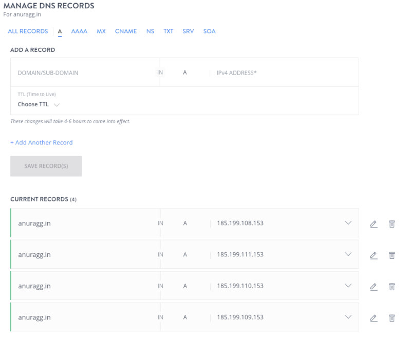
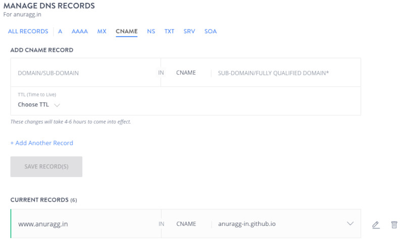
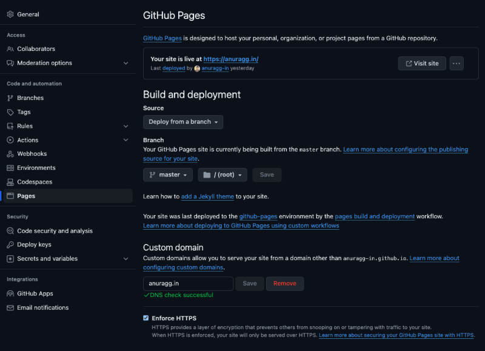

Free Static Website Hosting on Github with Custom Domain
Overview
GitHub can be used to host static websites (HTML+CSS+Javascript). The process involves creating a GitHub repository, adding the website files, and enabling GitHub Pages to serve the content.
Additionally, one can link a custom domain to their GitHub website, i.e., use a personalized domain name instead of the default Github URL. This service can be used for personal blogs, portfolios, documentation, and simple project sites with static content.
Github
To get started, create a public repository on GitHub, naming it as "username.github.io". Now add your static website files—such as HTML, CSS, and JavaScript—either by uploading them directly through GitHub's interface or by pushing them via Git. The website is live and accessible at a username.github.io.
Custom domain
Using a custom domain on GitHub Pages allows you to replace username.github.io with your own personalized domain name.
Purchase a domain name from a domain registrar
The first step is to acquire a personalized domain name from a domain registrar (e.g., GoDaddy, Bigrock, Namecheap, etc). In this tutorial, I will use the domain name anuragg.in purchased on Bigrock.
Configure DNS settings
Log in to Bigrock website and access the DNS settings for your domain. Create four different A or ANAME records pointing to the github IP addresses 185.199.108.153, 185.199.109.153, 185.199.110.153, and 185.199.111.153, respectively.
Managing DNS: A Records
Also, create a CNAME DNS record with www.anuragg.in pointing to username.github.io.
Managing DNS: CNAME Records
Configure Github
Create a CNAME file in the Github repository. In the file, write the personalized domain name anuragg.in. Once DNS propogation completes, your website will be accessible via your custom domain. It can take up to 48 hours for DNS propogation. To complete the setup of the repository for custom domain, go to Settings → Code and automation tab → Pages and enter your personalized domain (anuragg.in) under the Custom domain section.
Configure custom domain name on Github